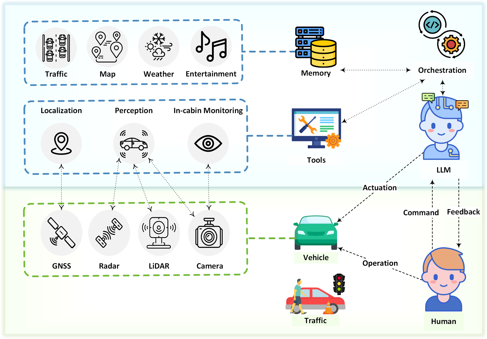

Receive, Reason, and React: Drive as You Say with Large Language Models in Autonomous
Vehicles
Can Cui*, Yunsheng Ma*, Xu Cao, Wenqian Ye and Ziran Wang
We present a novel approach where LLMs serve as the decision-making ``brain" within autonomous vehicles. Complementing this, various tools within the autonomous vehicle ecosystem, including the perception module, localization module, and in-cabin monitor, function as the vehicle's sensory ``eyes." This configuration enables LLMs to overcome the inherent limitation of not directly accessing real-time environmental information. Additionally, the vehicle's controller function as its ``hands," executing instructions derived from the LLM's decision-making process. Through receiving environmental information and drivers' commands, reasoning based on this information and human interaction, and finally making decisions, we make the autonomous driving experience that is not just technologically superior but also deeply human-centric by LLMs. 
3R Cases Study
In our closed-loop driving experiment on HighwayEnv using GPT-4, we try to assess the LLMs' interpretation, chain-of-thought, and environmental interaction abilities. Our experimental design includes two distinct highway scenarios. In the first one, the environment was safe for overtaking the vehicle ahead; in contrast, the second scenario presented conditions where overtaking was considered unsafe and not suitable. The emphasis was on observing the LLMs' reactions and decision-making in various conditions. For each scenario, we employ two distinct training methods. One method utilized standard prompting for training, and the other used the chain-of-thought prompting approach. Through this design, our objective was to discern and highlight the comparative advantages of using chain-of-thought prompting over standard prompting techniques. The whole working process for safe and unsafe scenarios is shown in below figure respectively. When prompted using the chain-of-thoughts method, the LLMs first generate comprehensive and reasoned thoughts before suggesting a driving plan. In contrast, with the standard prompting training method, the LLMs directly present the plan. The plans derived from these two methods have distinct differences.
Highway Demos
Highway Safe Passing Scenario Through Standard Prompting
Highway Safe Passing Scenario Through Chain-of-thought Prompting
Highway Unsafe Passing Scenario Through Standard Prompting
Highway Unsafe Passing Scenario Through Chain-of-thought Prompting
Intersection Demos
Merging Scenario with No Extra Command
Merging Scenario with Command "Drive Aggressively"
Merging Scenario with the Command "Drive Conservatively"
 |
 |
 |
 |
 |
| Can Cui Purdue University |
Yunsheng Ma Purdue University |
Xu Cao PediaMed AI & UIUC |
Wenqian Ye PediaMed AI & UVA |
Ziran Wang Purdue University |
- © Purdue Digital Twin Lab
- Lab Website: purduedigitaltwin.github.io